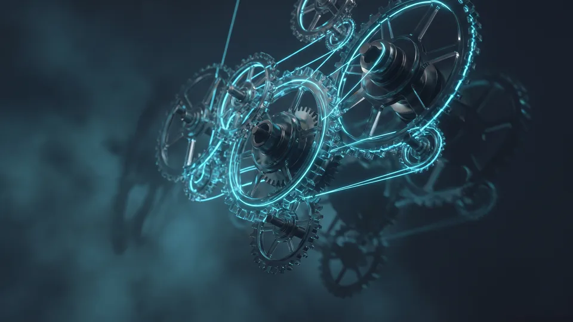

E-Ticaret SEO Nedir, Sıralamayı Üreten Mekanizma Nasıl Çalışır?
E-ticaret SEO, ürün ve kategori sayfalarının arama sonuçlarında üst sıralara çıkmasını sağlayan optimizasyon disiplinidir. Mekanizma üç dişliyle döner. Arama talebi sayfalara dağılır ve her sayfa tek niyete odaklanır. Otorite ise iç bağlantılarla doğru sayfalara akar. Profesyonel bir e-ticaret SEO hizmeti bu üç dişliyi aynı planda buluşturur.
- Talep analizi: ekip her kelimenin aranma hacmini ve niyetini çıkarır.
- Sayfa eşleştirme: plan her arama niyetine tek sayfa atar. Geniş sorguyu kategori, spesifik sorguyu ürün karşılar.
- Sinyal üretimi: başlık, açıklama ve içerik, sayfanın konusunu arama motoruna net biçimde anlatır.
- Otorite dağıtımı: iç bağlantılar kazanılan gücü sıralanması istenen sayfalara taşır.
Arama Niyeti Katmanları Mekanizmanın Neresinde?
Arama niyeti, kullanıcının sorgusunun arkasında yatan amaçtır. "Deri ceket nasıl temizlenir" bilgi arar. "Kadın deri ceket" ürün keşfeder. "Deri ceket fiyatları" satın almaya yaklaşır. E-ticaret SEO hizmeti her niyet katmanına farklı bir sayfa türü atar. Rehber içerik, kategori sayfası ve ürün sayfası bu üçlünün karşılığıdır.Kategori Sayfaları Arama Talebini Nasıl Yakalar?
Kategori sayfası, tek bir ürünün karşılayamayacağı geniş aramaları toplayan vitrin sayfasıdır. Yüksek hacimli "spor ayakkabı" sorgusunu kategori üstlenir. Ürün sayfaları bu çatının altında spesifik talepleri karşılar. Doğru kurgulanmış hiyerarşi, arama talebi haritasıyla mağaza yapısını birebir örtüştürür. Bu eşleşme, mekanizmanın talep yakalama ayağını oluşturur.
Kategori Açıklaması Hangi İşlevi Görür?
Kategori açıklaması, sayfaya özgün metin katmanı ekleyen kısa içeriktir. Ürün listesi tek başına arama motoruna az sinyal verir. 150-300 kelimelik özgün bir açıklama sayfanın konusunu netleştirir. Optimizasyon ekibi bu metinleri doldurma amaçlı değil, kullanıcı sorularına cevap verecek biçimde yazar.Ürün Sayfasında Sıralamayı Hangi Sinyaller Üretir?
Ürün sayfasını sıralatan üç ana sinyal vardır: özgün açıklama, yapılandırılmış veri ve kullanıcı etkileşimi. Üretici metnini kopyalayan binlerce siteden ayrışmak için açıklamanın size ait olması gerekir. E-ticaret SEO hizmeti bu üç sinyali her ürün şablonuna sistematik biçimde yerleştirir. Sinyaller birleştiğinde sayfa hem makineye hem alıcıya aynı hikâyeyi anlatır.
Yapılandırılmış Veri Nasıl Çalışır?
Yapılandırılmış veri, ürün bilgilerini arama motorunun okuyabileceği formatta etiketleyen kod katmanıdır. Bu etiketler fiyatı, stok durumunu ve değerlendirme puanını makineye iletir. Sayfanız böylece zengin sonuç gösterimlerine aday olur.Zengin Sonuç ile Tıklama Döngüsü
Zengin sonuç, arama sayfasında yıldız puanı ve fiyat gibi ek bilgiler gösteren listelemedir. Dikkat çeken listeleme daha çok tıklama alır. Artan tıklama oranı sayfanın alaka sinyalini güçlendirir. Hizmet kapsamında kurulan bu döngü, kazanılan pozisyonu kendi kendini besleyen bir sürece çevirir.Site Mimarisi ve İç Bağlantı Akışı Neden Belirleyicidir?
İç bağlantı, sayfalar arasında otorite ve bağlam taşıyan köprüdür; site mimarisi bu köprülerin düzenidir. Ana sayfadan üç tıkla ulaşılamayan ürün, arama motorunun gözünde önemsiz kalır. Doğru hiyerarşide güç ana sayfadan kategorilere, oradan ürünlere kesintisiz akar. Akışı kesen kopuk sayfalar mekanizmanın en sık gözden kaçan zayıf halkasıdır.
Üç Tık Kuralı Neyi Garanti Etmez?
Üç tık kuralı, her ürüne ana sayfadan en fazla üç adımda ulaşılmasını öngören mimari ilkedir. Kural erişilebilirliği sağlar; tek başına sıralama getirmez. Ulaşılabilir sayfanın bir de niyetle eşleşmesi ve özgün sinyal üretmesi gerekir.“2024 yılında 600 bin 800 olan e-ticaret yapan işletme sayısı, 2025'te 634 bin 611'e yükseldi.”
— Ticaret Bakanlığı, Türkiye'de E-Ticaretin Görünümü 2025
İçerik Katmanı Satış Sayfalarını Nasıl Güçlendirir?
Rehber ve blog içerikleri, bilgi arayan kullanıcıyı yakalayıp otoriteyi satış sayfalarına aktaran destek katmanıdır. "Hangi koşu ayakkabısı alınmalı" rehberi doğrudan satmaz. Kategoriye verdiği bağlantıyla hem ziyaretçi hem güç taşır. E-ticaret SEO hizmeti bu katmanı satış hunisinin üst adımı olarak planlar.
Anlam Eşleşmesi Nedir?
Anlam eşleşmesi, sayfa içeriğinin arama sorgusunun ardındaki konuyla örtüşme derecesidir. Eş anlamlılar, ilgili kavramlar ve doğal sorular metne yayıldığında eşleşme güçlenir. Bu çalışma, örtüşmeyi hem kategori metinlerinde hem rehber içeriklerde bilinçli olarak kurar.Mağazanız İçin Profesyonel E-Ticaret SEO Desteği Alın
Mekanizmayı bilmek ile onu her gün işletmek arasındaki farkı profesyonel destek kapatır. Talep analizi, sayfa eşleştirme, sinyal üretimi ve otorite dağıtımı sürekli bakım ister. E-ticaret SEO hizmeti veren ekibimiz bu döngüyü sizin adınıza kurar, ölçer ve raporlar. Siz ürüne ve operasyona odaklanırken sıralama tarafı planlı ilerler.

Kategori Sayfası ile Ürün Sayfası Optimizasyonu Karşılaştırması
| Boyut | Kategori Sayfası | Ürün Sayfası |
|---|---|---|
| Hedef arama türü | Geniş, yüksek hacimli sorgular | Spesifik, satın alma niyetli sorgular |
| Ana sinyal | Özgün kategori açıklaması ve hiyerarşi | Özgün ürün açıklaması ve yapılandırılmış veri |
| İç bağlantı rolü | Gücü ürün sayfalarına dağıtır | Gücü alır, dönüşüme çevirir |
| İçerik tazeliği | Sezonluk düzenlemelerle korunur | Kullanıcı yorumlarıyla sürekli beslenir |
| Huni konumu | Keşif ve karşılaştırma | Karar ve satın alma |
Kapsamınıza uygun yol haritasını birlikte çıkaralım; adımları ve zamanlamayı netleştirelim.
Kapsam çıkaralım Hizmet sayfasını görSıralama şans değil mekanizma işidir. Talebi haritalayan, her niyete doğru sayfayı atayan ve gücü bilinçli dağıtan mağazalar öne çıkar. Bu düzeni kurmak için e-ticaret SEO hizmetimizle tanışın. Ürün ve kategori sayfalarınız aramalarda hak ettiği pozisyona yürüsün.